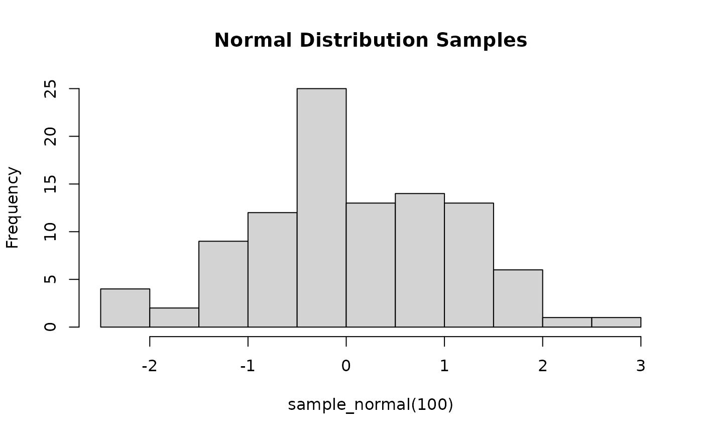
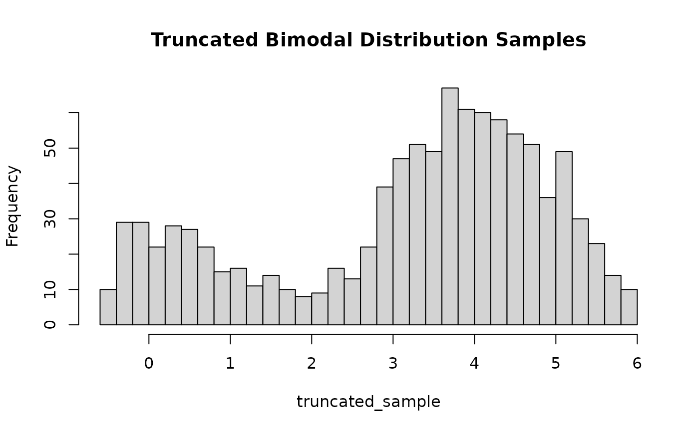

Sampling Function for User Defined Density
build_sampler.RdThis function generates a sampling function based on a proposal created by the user using the build_proposal() function.
The resulting sampling function can then be used to produce samples.
Arguments
- proposal
The sampling proposal created using the
build_proposal()function.
Details
After a user creates a proposal for their desired sampling function using build_proposal,
this proposal must be passed to build_sampler() to create a sampling function for the target distribution.
build_sampler() first checks whether the proposal was indeed created using build_proposal(). If the user has altered
or modified the proposal returned from build_proposal(), build_sampler() will reject the altered proposal; therefore,
no changes should be made to the proposal after its creation. Once the proposal is accepted by build_sampler(), it is
cached in memory, allowing fast access to proposal data for the compiled C code and reducing memory access latency.
Subsequently, build_sampler() returns a function that can be utilized to generate samples from the target distribution,
Examples
# Example 1
# To sample from a standard normal distribution \( f(x) \sim \mathcal{N}(0,1) \),
# first build the proposal using \code{build_proposal()}
modes_norm = 0
f_norm <- function(x) { 1 / sqrt(2 * pi) * exp(-0.5 * x^2) }
h_norm <- function(x) { log(f_norm(x)) }
h_prime_norm <- function(x) { -x }
normal_proposal = build_proposal(lower = -Inf, upper = Inf, mode = modes_norm,
f = f_norm, h = h_norm, h_prime = h_prime_norm, steps = 1000)
# Generate samples from the standard normal distribution
sample_normal <- build_sampler(normal_proposal)
hist(sample_normal(100), main = "Normal Distribution Samples")

# Example 2
# Let's consider a bimodal distribution composed of two normal distributions:
# The first normal distribution N(0,1) with weight p = 0.3,
# and the second normal distribution N(4,1) with weight q = 0.7.
f_bimodal <- function(x) {
0.3 * (1 / sqrt(2 * pi) * exp(-0.5 * (x - 0)^2)) +
0.7 * (1 / sqrt(2 * pi) * exp(-0.5 * (x - 4)^2))
}
# Define the modes of the bimodal distribution
modes_bimodal <- c(0.00316841, 3.99942)
# Build the proposal for the bimodal distribution
bimodal_proposal = build_proposal(f = f_bimodal, modes = modes_bimodal,
lower = -Inf, upper = Inf, steps = 1000)
# Create the sampling function using \code{build_sampler()}
sample_bimodal <- build_sampler(bimodal_proposal)
# Generate and plot samples from the bimodal distribution
bimodal_samples <- sample_bimodal(1000)
hist(bimodal_samples, breaks = 30, main = "Bimodal Distribution Samples")
# Create the truncated sampling function using
# \code{build_sampler()} with truncation bounds [-0.5, 6]
truncated_bimodal_proposal <- build_proposal(f = f_bimodal,
modes = modes_bimodal, lower = -0.5, upper = 6, steps = 1000)
# Create the sampling function using \code{build_sampler()}
sample_truncated_bimodal <- build_sampler(truncated_bimodal_proposal)
# Generate and plot samples from the truncated bimodal distribution
truncated_sample <- sample_truncated_bimodal(1000)
hist(truncated_sample, breaks = 30, main = "Truncated Bimodal Distribution Samples")
